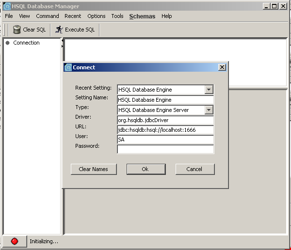
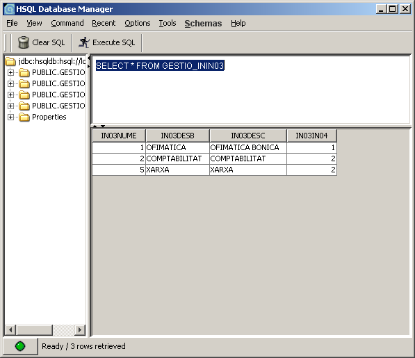

Сервер БД HSQL
Для работы с данным руководством требуется немного знаний о БД. Вам необходимо установить OpenXava и HSQL.
Запуск сервера HSQL
Мы будем использовать базу данных management-db (если она не существует, HSQL создает её автоматически ). Для этого перейдем в папку
openxavaX/portal/bin (openxavaX - место, куда мы установили Openxava) и из командной строки выполним команду:
- В Linux/Unix: ./starthsqldb.sh management-db 1666
- В Windows: starthsqldb management-db 1666
Мы запустили серер БД HSQL, используя порт 1666.
Администрирование HSQL
HSQL предоставляет утилиту HSQL Database Manager для администрирования БД. Скачайте её с веб-сайта HSQL и установите. Далее запустите
runManagerSwing.bat из папки
demo. Теперь мы можем администировать нашу базу данных
management-db, используя удобный графический пользовательский интерфейс
. На первой иллюстрации ниже представлено окно подключения к БД.

На следующей иллюстрации представлен основной экран программы.
Переводчик - ИМХО далее автор рапортовался. Но перевожу, как написано. Слева мы видим каталог "GESTIO" с несколькими уже созданными таблицами. В окне справа мы можем выполнять запросы SQL для манипуляции со структурой или данными таблиц, а также выполнять выборки данных из БД. Одна из таблиц называется ININ03. Нам нужно использовать подчеркивание ("_"), чтобы указать каталог и имя таблицы в запросе SELECT так, как показано ниже.
